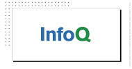
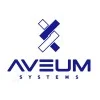

Dennis R. Gesker
dennis.gesker.com · dennis@gesker.com · +1 202-798-3202
IT Strategy · Project Management · Team Leadership · Technical Staff Development · Software Development Life Cycle (SDLC) · Agile & Waterfall · Enterprise Architecture · Microsoft Dynamics · System Administration · Linux · NixOS · Windows Server · Kubernetes · Docker · Podman · Blockchain · ZCash Integration · SQL · Postgresql · MySql · MS-SQL · NoSql · MongoDb · SurrealDb · DynamoDb · AWS · Azure · Linode · Contabo · Java · Jakarta EE · Quarkus · Spring Boot · Rust · Python · REST · gRPC · GIS · GeoTools · Qgis · SVN · Maven · GIT · Ansible · Terraform · Puppet · DevOps · Cloud · HIPAA Compliant Network Design
Current focus: Rust (Dioxus) full-stack applications, declarative infrastructure (NixOS, Podman/Quadlets), agentic AI development workflows, blockchain integrations for integrity/trust, and secure multi-platform delivery (web, desktop, iOS, Android).
Background / Summary
Having 30 years of experience in the information technology field, Dennis has worked with dozens of programming languages and foundational technologies across products, operating systems, databases, and cloud systems. Experience spans small LANs, carrier-level domestic WANs, and global information systems, including OCONUS operations.
Recent work emphasizes architecture ownership, pipeline design, and delivery of modern multi-platform systems using Rust, declarative infrastructure, agentic tooling, and blockchain where they provide clear advantage, while applying operational security practices developed in TS/SCI environments.
Core Competencies
- Leadership and Human Capital Management
- Process and Change Management
- Information Resource Strategy and Management
- IT Performance Assessment
- IT Project and Program Management
- Capital Planning and Investment Control
- Acquisition & Organization Integration
- Cybersecurity / Information Assurance (IA)
- Information and Knowledge Management
- Enterprise & Software Architecture
- Technology Management and Assessment
- Technical Staff Training & Development
Executive Profile
IT executive who combines business operations, systems analysis, and team leadership with deep technical judgment. Consistently translates strategy into architecture, budget, process, and delivery decisions that improve financial results and reduce organizational risk.
Supported financial reporting, budgeting, operations, and strategic diversification in competitive telecommunications and data-center contracting environments, with emphasis on cost reduction, process optimization, and avoidance of sunk costs. Applied the same discipline in biotechnology settings where HIPAA requirements and early proprietary AI/ML products demanded both rigor and speed.
Maintains operational security as a core design principle, rooted in prior work supporting US State Department, intelligence, and military information systems in TS/SCI environments, and reinforced through carrier-level telecommunications infrastructure and regulated biotechnology systems.
Technology is ultimately about people. The practical mission is to support Teams, Tech, Tools & Timing so that organizations can deliver secure, reliable, and economically sound results.
Candela Global, LLC, Bozeman, Montana
Software Engineering and DevOps Manager: January 2022 – Present
Operating locations have included Denver, CO; Oahu, HI (Fort Shafter); Eugene, OR; and Fort Lauderdale, FL.
Contractor role focused on systems architecture, modernization, delivery pipelines, and startup support. Work has spanned microservices design, cloud migration, CI/CD, private PKI, biometric identity systems, machine-learning pipeline simplification, mobile application modernization, GIS validation, and patent preparation.
Tabulare – Multi-Platform Contact Assessment & Scoring Platform
As architect, lead developer, and product owner, designed and advanced a full-stack multi-platform application (web, desktop, iOS, Android) from concept to MVP. Owned product vision, system architecture, data models for longitudinal contact scoring and social/network assessments, security and compliance posture, and go-to-market readiness.
- Built declarative, reproducible development and deployment pipelines using Nix, Podman/Quadlets, and GitHub Actions.
- Used agentic AI tooling to accelerate implementation while retaining architectural control.
- Incorporated blockchain mechanisms for selected integrity and trust features.
- Prepared custom Terms of Service and Privacy Policy meeting App Store and Google Play requirements, with Montana arbitration and clear liability boundaries.
Technologies: Rust (Dioxus), PostgreSQL / PostgREST, authentication and billing integrations, containerized pipelines, agentic workflows, blockchain elements.
Additional Architecture and Delivery Work
- Systems Architecture and Modernization
- Microservices using Quarkus, Rust, Kubernetes, Docker, Podman, Kafka, RabbitMQ, and PostgreSQL Cron Module
- Monolith-to-microservices migration (Java/Jakarta EE to Quarkus with Apache Kafka; Spring Boot to Quarkus/Vert.x)
- Cloud and cloud-native work: AWS to/from Linode migrations; greenfield backend in Azure
- CI/CD
- Terraform, Ansible, OpenTofu
- NixOS and Debian containerization
- GitHub/GitLab Actions, Jenkins
- Private CA / Transport Layer Security systems
- Biometric identity (DNA, facial recognition)
- Machine Learning
- Pipeline simplification
- Migration of Python/TensorFlow routines to/from Rust
- Analysis and mitigation of model overfit
- DNA identity validation systems
- Mobile applications
- Migration of JavaScript applications to Flutter
- Streamlined REST, gRPC, and GraphQL backends
- Startup Support
- Cloud spend mitigation and cost control
- Budget preparation
- CapEx and depreciation planning
- GIS routine validation (ArcGIS, GeoTools, PostGIS) including ArcGIS-compliant shapefile creation
- US patent preparation
This body of work demonstrates practical leadership of modern architecture, secure systems, automated delivery, and product readiness in a lean environment.
Montana State University, Bozeman, Montana
Graduate Studies Refresher: Fall 2021 ONLY
- Artificial Intelligence (AI/ML) Ph.D. Participation
- Full Time Fall 2021
- Participate in Ph.D. Seminar
- Prerequisite Coursework
- Revisit Foundational Mathematics Course Work
- Logic, IT Systems, Linear Algebra, Etc.
- Revisit Foundational Mathematics Course Work
- Accepted to CS Ph.D. Program
- Elected to return to industry
Alamon, Inc., Kalispell, Montana
Chief Technology Officer: July 2018 – August 2021
- Define and represent the firm’s technological agenda
- Designed and Developed Mobile Application
- Enabled Division recovery
- $330,000 Loss 2018 to $3M Net Profit by 2021
- GIS Enabled Android System using AWS as Backend
- Includes GIS Data export/import/validation
- ArcGIS, Windmill, PostGIS, qGIS
- Includes Material Tracking and Inventory
- Includes GIS Data export/import/validation
- Real Time Reporting and Work Assignment
- Microsoft Dynamics Project Accounting Integration
- MS-SQL Pivot Table Reporting
- Automated IML Resistograph Analysis
- Bluetooth IML Resistograph Integration
- Enabled Division recovery
- Achieve organizational goals as defined in the firm’s strategic plan
- Ensure continuity & security of technical operations
- FULLY OPERATIONAL DURING COVID CRISIS
- Direct and Oversee Employees, Technology Development & Technology Support Teams
- Team: 2 IT Support Staff, 3 Full Time Developers, Contractors as Required
- Maintain firm’s technical knowledge base
- Technology Landscape and Industry Developments
- Employee Base Education & Professional Development
Alamon, Inc., Kalispell, Montana
Operations Manager: Information Technology: March 2012 – June 2018
Sept 2017: Elected Trustee of ESOP Board
May 2017: Elected Company Officer; Secretary & Treasurer
- Achieved significant cost reduction by building in house employee Payroll and HR portal
- 8,032 Administrative Man Hours Saved in initial year (2014)
- 15,008 Administrative Man Hours Saved Per Annam by 2018
- Reduced project analysis time
- Project analysis
- Real Time Revenue Recognition Estimates
- Bid Turn Around to Customer reduced by 32% by 2018
- $ 217,000 Direct Cost Reduction
- Project Manager Level Costs Saved
- (Cash Basis) in 2015
- Project Manager Level Costs Saved
- $ 432,000 Direct Cost Reduction
- Project Manager Level Costs Saved
- (Cash Basis) by 2018
- Project Manager Level Costs Saved
- Ensure IT support and communication capabilities of highly mobile workforce
- 37 States in FY 2017
- 45 States in FY 2018
- Architect and Design for Enterprise Applications
- Project Management and oversight of SDLC using Agile, Kanban methodologies.
- Full Stack Java EE Development
- SQL Modeling and Normalization
- Manage software development team and IT systems and support personnel
- Accelerate knowledge base and capabilities of junior developers and administrative support teams
- Define and Prepare Project Objectives, Design Documents and Budgets
- Prepare Specifications, (Non-Disclosure Agreements) NDAs and (Requests for Pricing) RFPs for Outsourced Development Efforts
- Recruit, Hire and Train New Team Members
United States Department of State, Rome, Italy
United States Embassy, Rome, Italy
Information Management Specialist: September 2010 – February 2012
- Information Management Specialists (IMS) manage and operate worldwide information technology infrastructure, including PC local and wide area networks, telecommunications systems, telephone and UHF/VHF programs, and diplomatic pouch and mail services
- Ensure proper dissemination of official classified and unclassified telegraphic traffic
- Embassy lead on dissemination rule optimization for State Messaging and Archive Retrieval Toolset
- As Technological Platform/Chassi Role Provide Support for Resident Agency Personnel At Post
- SIPRNet, NIPRNet, SMART, SAVANT, VIPRE, KPS, TMAP, CHRONOS, AD content transfer, etc.
- Perform system administration of classified local area network (ClassNet)
- Ensure network software and hardware meet DoS baselines
- Ensure compliance with Diplomatic Security (DS)
- Provide operational assistance and direct training to users
- Create and maintain various Information Processing Center (IPC) Standard Operating Procedures (SOPs)
- Serve, on a rotating basis, as duty officer providing 24-hour on-call availability for high precedence telegrams and integrity of post communications systems and circuits
- Maintain and test emergency communications equipment including alternate route and High Frequency (HF) radios
- Safeguard, account for, and properly dispose of classified equipment and material (including cryptographic) in conformance with all agency IRM and DS standards
- Ensure maintenance and accuracy of information technology inventory including use of the Integrated Logistics Management System (ILMS)
Alamon, Inc., Kalispell, Montana
Manager – Special Projects: September 1996 – September 2010
- Developed Method of Procedure for Telecommunications (Pole) asset infrastructure and inspections based on RUS standards. Developed supporting survey collection application using GeoAge FAST (running on Microsoft ME platform) and back end file processing including record import, verification & reporting application using Java SE, Java EE and MS-SQL technologies.
- Trustee and member of the company’s Retirement Plan Investment Committee. Committee/team provides oversight and direction for transition of the company’s pooled profit sharing plan to employee self-directed plan which is 401(k) addition ready.
- Provided research and conceptual design services in support of grant application ($25M) to FCC for construction of private medical fiber optic network. $14M awarded to date in the pre-engineering stage.
- Implemented MS Great Plains Dynamics 6.5 & MS SQL 2000 based accounting system. Update: Deployed subsequent upgrades. Present system is MS-Dynamics GP version 10 & MS-SQL 2008 system.
- Designed and implemented TL9000-V R3.0/R3.0 (ISO 9001:2000) Quality Management System resulting in successful certification. Project included in depth process identification, review and redesign in close coordination with top management and operational departments.
- Designed Developed web based Database and reporting system using Java technologies (J2SDK 1.4.2, JBoss 3.x J2EE Application Server, JSP, JDBC) which facilitated integrated reporting across several data sources; MS-SQL 2000, MS-Access, PostgreSQL. Update: Upgraded this system to MS-SQL 2008, Java JDK 6, Java EE 5 using JSF, Glassfish & JPA/Toplink. Enhanced application with Swing based client application launched via Java Web Start.
Patents Pending
United States Patent and Trademark Office
- Systems and Methods for Distributed Blockchain Monitoring and Inherent Latency Compensation Filed 25 May 2023 · Application 18/323408 · Document US-20240303665-A1 Methods, systems and computer readable media for managing (e.g., queuing, batching, submission, and logging) and monitoring distributed blockchain operations such as cryptocurrency operations and transactions by client application systems and end users of a client application system to compensate for the inherent latency in distributed blockchain systems.
- Systems and Methods for Economic Price Discovery in Social Media Networks Including Games Filed 25 May 2023 · Application 18/323409 Methods, systems and computer readable media for economic price discovery in social media networks including games are described. For example, a system and method can include assessing content, enhancing the quality of end user interaction, and overall utility of a social media network or information system by performing price discovery utilizing a user interface and price discovery mechanism among assessment controls utilized on a social media platform or application.
Publications
-

Two Must-Have Tools for Jakarta EE Developers InfoQ.com - Enter Jakarta EE: an Inoculation Against Fear, Uncertainty and Doubt in the Java Community Linux Journal No. 287
- Blog: challenges and experiences with enterprise grade software systems and supporting components WordPress
- Introducing the Culture of Free and Open Source Software to the Department of State Department of State — internally circulated strategy paper (SECRET/NOFORN)
- JSPWiki/GlassFish install — 18-part blog series gesker.blogspot.com
- Migrating to Mozilla Thunderbird SysAdmin Magazine — Volume 14, No. 6
- J2EE: A Shotgun Start Byte.Com
- Alternatives for Dynamic Web Development Linux Journal No. 83
Education
University of Pittsburgh, Pittsburgh, Pennsylvania
Katz Graduate School of Business: Masters in Business Administration (MBA)
Curriculum Track: Finance / Valuation
Graduated: 2001
University of Pittsburgh, Pittsburgh, Pennsylvania
Katz Graduate School of Business:
Masters in Management Information Systems (MS-MIS)
Curriculum Track: Software and Database Development
Graduated: 2001
Drexel University
Formerly: Medical College of Pennsylvania & Hahnemann University (MCPHU)
Bachelors of Science (Health Science)
Curriculum Track: Health Science and Humanities
Graduated: 1996
Training and Certifications
FCC - Federal Communications Commission
- Amateur Radio License
- 2025-May
- Operator Privileges: Amateur Extra
- Station Privileges: Primary
- Call Sign: NA1LS
Duke/Coursera/Remote
-
Rust Programming Specialization
- Comprehensive Rust Specialization
- 2025-May
- Software Engineering
- Platform Engineering
- MLOps Engineer
- Data Engineering
- Embedded Engineering
- Backend Development
-
- 2025-May
- Software Development
- Data Engineering
- Concurrent Rust Programming
- Data Structures and Algorithms
- Cloud Databases and Data Processing
- SQL Optimization, Big Data
- Diesel, Polars, Panda, Apache Arrow
- REST, gRPC
- AWS SDK, AWS Lambda, AWS EFS, AWS S3
- Google Cloud
-
Rust for Large Language Model Operations (LLMOp)
- 2025-May
- Infrastructure as Code , IAAC
- Automation and Tooling
- Hugging Face
- AWS Security Hub
- Identity Access Management, IAM
- LLMOps
- Rust Candle & BERT with ONNX
- Falcon LLM, Whisper LLM
- AWS BigCode, AWS BedRock
- PyTorch, Rust and PyTorch, Py
-
- 2025-May
- Large Scale Applications
- Linux, Git, and Docker
-
- 2025-May
- Development of reliable and high-performance applications
-
Python and Rust with Linux Command Line Tools
- 2025-May
- Py03
- Command Line Application Development
- Code Structure
- Logging and Error Handling
Foreign Service Institute
- PN106 Orientation - Foreign Service Specialist
- PS380 Introduction to Information Resource Management
- YW279 Department of State Applied Systems -- MS-Active Directory & MS-Exchange
- YW119 Overseas Operations for IRM Classified Pouch Operations COMSEC and CRYPTO
- YW533 S.M.A.R.T System Admin Diplomatic Communication and Cables
- YW278 Citrix Metaframe Presentation Server Admin (Earned Citrix Administrator Certificate)
- YW302 FASTNet Post Operation and Maintenance
- YW268 UHF/VHF Emergency and Evacuation
- YW142 Basic Telephone - Nortel/Avaya Norstar Key System Programming
- YW286 Simulated Operations
- YW497 Nortel/Avaya Meridian 61C/11C
- YW496 Nortel CallPilot
- MQ911 Security Overseas Seminar
Professional Organizations
- Jakarta EE Ambassadors Leadership Council · jakartaee-ambassadors.io
- Society of Catholic Scientists Member (Graduate Student) · catholicscientists.org
- Eclipse Foundation Member · eclipse.org
- Java Community Process Member · Technology Specification Organization · jcp.org
- Electronic Frontier Foundation Member · eff.org
-
 Institute of Electrical and Electronics Engineers
Associate Member · ieee.org
Institute of Electrical and Electronics Engineers
Associate Member · ieee.org
Projects: High Impact
Tabulare – Multi-Platform Contact Assessment & Scoring Platform
Date: 2024 – Present
Role: Architect, Lead Developer & Product Owner (Candela Global)
Designed, built, and advanced a full-stack multi-platform application (web, desktop, iOS, Android) from concept through MVP. Owned the complete lifecycle: product vision, system architecture, data modeling, security and compliance posture, CI/CD pipelines, testing strategy, and go-to-market readiness.
- Established declarative, reproducible development and deployment pipelines (Nix, Podman/Quadlets, GitHub Actions) that support consistent environments from local development through production.
- Applied agentic AI tooling as an accelerator for implementation while retaining architectural control and code quality standards.
- Incorporated blockchain-based mechanisms for selected integrity and trust features.
- Designed longitudinal contact scoring and social/network assessment capabilities with associated data models and APIs.
- Prepared custom Terms of Service and Privacy Policy aligned with App Store and Google Play requirements, emphasizing clear liability boundaries and Montana arbitration.
Technologies: Rust (Dioxus), PostgreSQL / PostgREST, authentication & billing integrations, containerized pipelines, agentic development workflows, blockchain elements, NixOS.
Outcome: Demonstrated end-to-end ownership of a modern product—strategy, architecture, secure implementation, automated delivery, and compliance readiness—as a lean technical leader.
Aveum Systems - DNA Based ID and Tracking System

Date: Spring 2024
Supported Aveum Systems, Inc. in formulating their technological road map for developing massively scalable DNA information systems and related technologies. The work focused on identity systems that are hyper-secure, cryptographically rigorous, AI/ML-backed, and resistant to AI-based attacks.
Aveum Systems, Inc. is a Delaware Corporation operating in the US and Europe with pilot programs targeted in Africa and the Kingdom of Saudi Arabia.
AlaTrac - Monetize & Market Ready
Date: June 2021
AlaTrac is a field service scheduling, asset tracking, and assessment platform used by Alamon field teams to assign, inspect, and capture attributes of industrial and utility assets (telephone poles, energy storage units, cellular towers, and related infrastructure). The solution contributed to division recovery and was positioned for productization as a new revenue source.
Key capabilities include geolocation, role-based field rules, intelligent data routing, image and Bluetooth telemetry capture via an Android Field Collector application, and bandwidth-aware synchronization to the AWS-backed core platform. The system moved beyond MVP into beta with continued hardening for third-party access.
Transform Application Architecture
Date: July 2019
Initiated and led the transformation of critical legacy applications from monolithic to microservices and distributed systems. Technologies included Jakarta EE, MicroProfile, PostgreSQL, MongoDB, Lucene/Elasticsearch, GeoTools, and the Hadoop ecosystem (Hive, Spark, etc.), with selective use of cloud vendors.
Restructure Technology Department
Date: March 2018
Engaged external subject-matter experts, acquired personnel aligned to green-field development needs, optimized software development processes, and restructured the technology organization so that structural changes remained within financial constraints while supporting strategic growth.
Federal Business Opportunities Process Development
Date: March 2017
Designed, implemented, graphically mapped, and trained cross-functional teams on a new process to absorb, screen, evaluate, pursue, and track both direct and subcontract opportunities generated by the U.S. Federal Business Opportunity system (FBO.gov). The process improved communication across departments.
Geographic Information Processing Cost Reduction
Date: February 2017
Reduced or avoided significant ArcGIS licensing costs by introducing open-source alternatives (QGIS, GDAL, PostGIS). Trained key users and enabled equivalent functionality for ordinary ESRI-compatible file processing, producing savings equivalent to multiple full-time administrative positions.
Marketing Effort Support
Date: April 2016
Supported both direct customer contact and technical aspects of the company’s marketing effort, providing a practical view of account management alongside deep technical work.
MS-Access Marketing Database
Date: November 2015
Led team design and implementation of a normalized MS-Access 2013 database for customer contact tracking, bid opportunity follow-up, and revenue projection. Features included austere navigation, automated ICS calendar notifications independent of the user’s email client, and low ongoing cost relative to cloud alternatives.
Enhanced Project Reporting Site
Date: August 2015
Built a Java EE (GlassFish, JSF/PrimeFaces, EclipseLink) reporting site that pulled project data from MS-Dynamics/MS-SQL and distributed performance, trending, and chart information to leadership and field managers without requiring additional Dynamics licenses.
File Management System
Date: May 2015
Developed a Java EE site that securely distributed payroll information and allowed administrative staff to publish documents by dropping files into a shared Windows folder. The system eliminated ADP payroll service costs, postal costs, and improved document distribution speed.